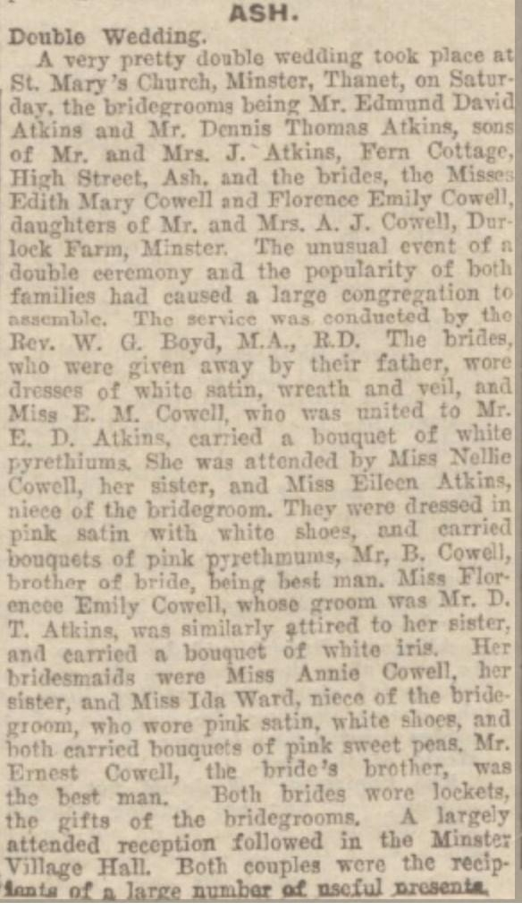
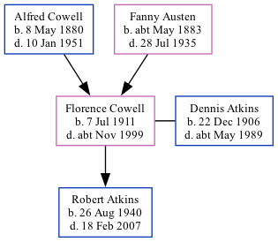

Florence Emily Atkins (née Cowell) 1911 - c1999 [ Home ] | [ Calendar ] | [ Surnames Index ] | [ Family History ]The daughter of Alfred Cowell (a transport driver) and Fanny Austen Florence Cowell , the first cousin once-removed on the mother's side of Nigel Horne , was born in Stourmouth, Kent, England on Jul 7, 19111,2,3,4 and married Dennis Atkins (a heavy farm laborer with whom she had 1 child, Robert Francis) in Thanet, Kent, England on Jun 4, 19325 .
Throughout her life, she lived at Durlock Farm Cottages, Minster in Thanet on Jun 19, 19211 ; and at Little Knell Farm Cottage, Knell Lane, Ash, Kent on Sep 29, 19396 .
She died c. Nov 1999 in Thanet2,3 .
Parents Alfred John was born on May 8, 1880Fanny was born c. May 1883Children Robert Francis was born on Aug 26, 1940Citations 1921 Census Of England & Wales - Findmypast (was age 9 and the daughter of the head of the household) England & Wales deaths 1837-2007 - Findmypast England & Wales, Death Index: 1984-2005 Online publication - Provo, UT, USA: The Generations Network, Inc., 2007.Original data - General Register Office. England and Wales Civil Registration Indexes. London, England: General Register Office. © Crown copyright. Published by permission of the Cont England & Wales, FreeBMD Birth Index, 1837-1915 Online publication - Provo, UT, USA: The Generations Network, Inc., 2006.Original data - General Register Office. England and Wales Civil Registration Indexes. London, England: General Register Office. © Crown copyright. Published by permission of the Cont England & Wales, Marriage Index: 1916-2005 Online publication - Provo, UT, USA: The Generations Network, Inc., 2009.Original data - General Register Office. England and Wales Civil Registration Indexes. London, England: General Register Office. © Crown copyright. Published by permission of the Cont 1939 Register - Findmypast (was the wife of the head of the household) Media Double Wedding  England & Wales births 1837-2006 - BMD/B/1911/3/AZ/000307/140 1939 Register Image - TNA-R39-1819-1819C-006 England & Wales marriages 1837-2008 Transcription - BMD-M-1932-2-AZ-000214-094 England & Wales deaths 1837-2007 Transcription - BMD-D-1999-11-82915205 1921 Census of England & Wales - GBC/1921/RG15/04429/0549/05 Family Tree Map
Generated by ged2site . Last updated on Feb 28, 2025